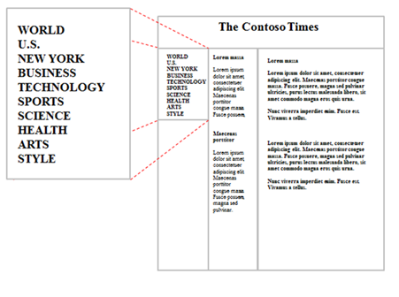
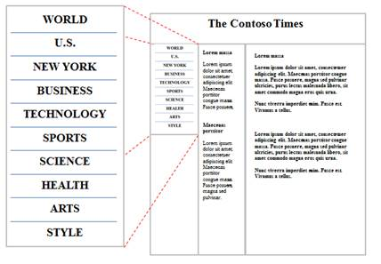

Internet Explorer for Xbox Developer's Guide
10" Design considerations
Distance from the Screen
"10" design" applies to experiences that are optimized for the living room. Most Xbox users connect their Xbox to a television and sit about 10 feet away from the screen. This distance can make basic tasks on traditional webpages more difficult. For example, small fonts can be hard to read, and hover menus and small links can be difficult to click.
When designing a webpage for TV, the viewable area should display less information overall, and what's there should focus on a confined set of tasks (even consider performing their desired task automatically or select the task by default). Try to keep all content "above the fold" and fully viewable on the screen without scrolling down.
- Fonts and graphics on the site need to be larger to account for viewing distance. People sit proportionally farther from a TV than from a computer monitor of the same size.
- To avoid a cluttered appearance on the TV, blank space between elements on the page should be greater. This is typically called white space (or padding) and it's a fundamental aspect of making web content easy to discern and navigate.
- Wide screen displays have more usable horizontal real estate than a desktop monitor, so navigation is better handled from the side (conserving valuable vertical space for content) or as an overlay.
Content and Functionality
Great 10" web experiences are optimized for content consumption, as opposed to creation and productivity scenarios. For example, a user-generated video website might support video browsing, playback, upload, editing, and tagging features. A 10" version might optimize specifically for browsing and playback, and might not offer editing capabilities. Remove links and functionality that don't make sense in the TV environment such as downloading and uploading functionality.
Keep navigation sidebars above the fold. This may require reducing the number of items in your navigation elements. If you're optimizing your site through CSS, you can place categories in divs and hide eliminated categories with display:none.
Interactions - keep them simple
Users will interact with Internet Explorer with a variety of input devices, including the controller, Xbox SmartGlass, Xbox 360 Chatpad, and voice. Keep in mind that some interactions that work well with a mouse and keyboard are more difficult to perform using touch or a controller. Avoid using drag-and-drop, hover, and timed interactions.
Navigation and Links
Compared with desktop browsing, two key differences in the living room experience are that user is further away and that controller or finger is a less precise input than the mouse. Along with making targets larger, it may also be necessary to remove links that aren�t appropriate for TV or seldom accessed links to keep navigation above the fold.
When designing navigation interfaces, make it easy for users to select links and other hit targets by emphasizing selections and making them larger and easy to see.
- Add a hover state to links and buttons to highlight when the pointer has hit its target.
- Make each click target (link, button, and the like) large with ample padding for an expanded target area.
- Elements like close boxes in the corners of pop-ups that are made small to be unobtrusive in a 2-foot UI are either impossible to see or very difficult to click with a mouse from 10 feet.
- Avoid using popups elements. They can be distracting and difficult to close.
For example, in these next images, there are two examples of a vertical navigation bar. The first example is designed for a mouse interaction. The link spacing is too close together for touch and controller users:
Navigating to these links requires too much dexterity on the part of touch and controller users. Clicking the wrong link can be frustrating.
In this second of the two images, the navigation bar has been modified so that the links are spaced further apart, and dividers have been added that help the user see the hit target area more clearly:
�Layout
Size
Internet Explorer for Xbox uses a combination of zoom and optical zoom to provide a TV-optimized presentation of sites. Websites are automatically zoomed to �fit to width� so that text is larger and legible from a distance. There are several factors that determine this automatic zoom level, including the TV aspect ratio (16:9 or 4:3), the resolution (480p, 720, 1080), and the size of the Safe Area, which is a buffer area around the edge of the TV screen.
Because Internet Explorer for Xbox automatically optimizes the zoom levels for different hardware, there are a few factors that you should take into account:
� Websites designed for 1024px width generally look great. Internet Explorer will automatically fit your webpage to width using layout zoom.
� Many TVs are widescreen (16:9). Consider using a layout that takes advantage of the width of the screen, rather than requiring vertical scrolling.
� Internet Explorer for Xbox doesn�t support multiple windows, so avoid pop-up windows.
Fixed position elements
Fixed position elements (CSS position: fixed) can interfere with smooth panning and scrolling. Avoid positioning elements this way.
Text Considerations
You can increase the legibility of your text by ensuring that it's large enough to be read from 10" away, and by using colors that reduce eye strain.
� Avoid using text that is smaller than 12pt.
� Many televisions have a higher brightness level than a computer monitor. Light-colored text on a dark background can reduce eye strain.
Color Guidelines
� Avoid using pure white (rgb(255, 255, 255)) as a background color. Instead, use rgb(200, 200, 200)
� Internet Explorer will color the "safe area" region at the edge of the screen the same color as your <body> element�s background-color.
� Test your website on low-quality TVs as well as newer HDTVs.
Approaches for 4 screens: TV, PC, Tablet, Mobile
For maximum customer reach, many websites are designed and tested for several device form factors, including desktop/laptop PC, tablet, and mobile devices.
Multiple, device-specific webpages
Some websites have device-specific experiences (for example, a mobile site). This might be appropriate for some scenarios. For example, if you're designing a special experience for Xbox that's different than your mobile and desktop experiences, it might be appropriate to build a separate, standalone experience. However, it can be costly to maintain multiple independent versions of your site.
A common way of doing this is to detect the user-agent string (either on the client or the server) and redirect the user to a device-specific webpage. To detect the Xbox, search for the Xbox token in the user-agent string.
One webpage
Given the proliferation of web browsing form factors and input methods, for most websites, we recommend using a single webpage that works well across a range of devices. Here are some things to consider when targeting multiple devices with a single page:
� Design for mouse, keyboard, touch, and controller
� Design for 1024px width, or
� Use adaptive design
o CSS Media Queries or JavaScript can be used to change the layout of your page based on properties of the device that is loading the page.
� On mobile devices, consider reducing image quality to save bandwidth and improve performance
� Minimize horizontal scrolling on narrow devices to improve readability
� Avoid using plug-ins
o Use HTML5 audio and video (h.264/AAC/MP3)
� Avoid using pop-up windows